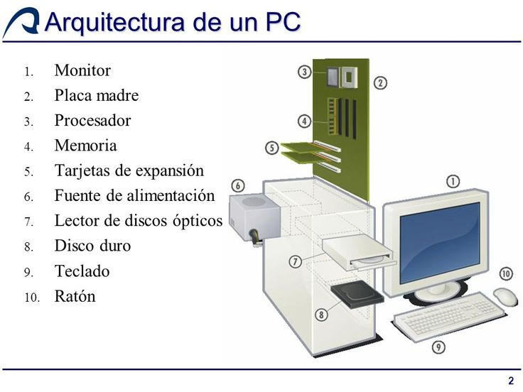

* ARQUITECTURA DE COMPUTADORAS *


¿Qué es arquitectura de computadoras?
La arquitectura de computadoras es el diseño conceptual y la estructura operacional fundamental de un sistema de computadoras.Es decir, es un modelo y una descripción funcional de los requerimientos y las implementaciones de diseño para varias partes de una computadora, con especial interés en la forma en que la unidad central de proceso (CPU) trabaja internamente y accede a las direcciones de memoria.
También la arquitectura del computador está basado en tres grandes principios que se aplican a todo dispositivo o componente del computador, estos tres principios son: velocidad, capacidad y tipo de conexión.
También suele definirse como la forma de interconectar componentes de hardware, para crear computadoras según los requerimientos de funcionalidad, rendimiento y costo.
La computadora recibe y envía la información a través de los periféricos, por medio de los canales. La CPU es la encargada de procesar la información que le llega a la computadora. El intercambio de información se tiene que hacer con los periféricos y la CPU. Puede considerarse que todas aquellas unidades de un sistema, exceptuando la CPU, se denomina periférico, por lo que la computadora tiene dos partes bien definidas, que son:
La CPU (encargada de ejecutar programas y que también se considera compuesta por la memoria principal, la unidad aritmético lógica y la unidad de control).
Los periféricos (que pueden ser de entrada, salida, entrada/salida, almacenamiento y comunicaciones).

Inicio -
Unidad 1 -
Unidad 2 -
Unidad 3 -
Unidad 4
Creado por Arnoldo Gaona Hernandez, Ingenieria
en Sistemas Computacionales Tec Campus Saltillo.